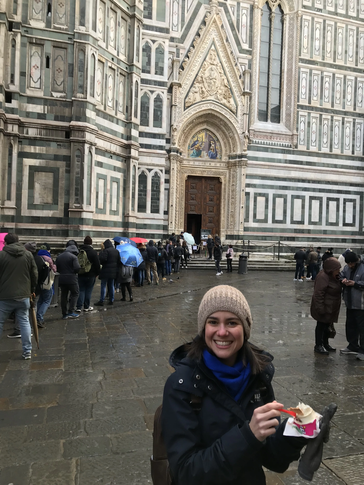

The first time I ever moved in my life, I was 15 years old. I left Rio de Janeiro — warmth, freedom, friends I had known since childhood, a life I loved — and arrived in York, England, in the middle of winter. The culture shock was seismic. I had never felt cold like that: not swimming-pool cold, but the kind that lives in the January wind in the northeast of England and makes you wonder why any human being ever settled there at all.
I was expected to be grateful. And I knew, rationally, that I should be — my father was there for his PhD, this was an opportunity, a better future. But to expect a 15-year-old to live on those abstractions? It was a lot to ask. What I actually felt was fury. A deep, bewildered, homesick fury that nobody around me seemed to think was reasonable.
I stayed in England until my early thirties. I got married, I built a life. But I never truly adapted — not in the way that felt like belonging. And understanding why took me many years, many more moves, and eventually a career in counselling.
Why culture shock hits harder than you expect
We talk about culture shock as though it's a practical problem — you don't know the language, you don't know how the systems work, you're not sure which bin to put things in. And those things are real. But the deeper difficulty of adapting to a new country is emotional, and it's one that often goes unnamed.
When you move, especially involuntarily or without full agency over the decision, you don't just lose your environment. You lose the version of yourself that existed in that environment. The friendships that held you, the rhythms that gave your day shape, the easy confidence of knowing how things work and who you are within them. That loss of self is one of the most disorienting parts of expat life — and one of the least talked about.
Culture shock is not just the strangeness of a new place. It is the grief of the life you left behind.
For me at 15, the anger I felt wasn't irrational. It was grief. And it deserved to be treated as such, not managed away with reminders about opportunity and gratitude.
When the same person adapts completely differently
Years later, I moved to Paris. My husband had taken a post there; we went as a family with our young son. And my experience of adapting to a new country could not have been more different.
I fell in love with Paris almost immediately. I would drop my son at school and spend the morning in museums, walking the city with no destination, talking to merchants on my street in broken French and not caring. I was open in a way I simply hadn't been at 15. And the city gave it back to me tenfold.
Paris taught me that adapting to a new country is possible — joyfully, even — when the conditions are right.
What made the difference? I've thought about this often. Part of it was age and agency — I was an adult making a choice, not a teenager being moved. Part of it was that I arrived with curiosity rather than resistance. But a large part, I think, was that I was allowed to grieve England first. By the time we left for Paris, I had spent 16 years in the UK and had made peace with it. I wasn't leaving something unresolved. I was ready.
The lesson I draw from this, both in my own life and in working with expat clients, is that readiness matters enormously. Not readiness in the logistical sense — the visa, the flat, the school — but emotional readiness. And that's much harder to manufacture on a timeline.
When a city you resisted becomes home
Florence was harder. We arrived after Paris — my husband's next post — and I was not ready. I had loved Paris like a person, and I was still grieving it. Florence felt chaotic and bureaucratic and baffling in ways that Paris, for all its inscrutability, never had. There was less support. The HR department that had helped us settle in France was nowhere to be found in Italy. I was just the spouse, and the spouse, apparently, figures it out alone.
I remember a feeling I'm almost embarrassed to admit: I wanted Italy to change for me. I kept waiting for it to become more like the life I had left. It took me longer than I'd like to acknowledge to realise that this was not going to happen — and that it wasn't Italy's job.

Florence resisted me for a while. Then I stopped resisting it.
The shift came when I stopped waiting and started choosing. I committed to learning Italian properly. I joined a gym. I said yes to things. And opportunities, as they tend to do, began to arrive. Slowly, Florence became a place I recognised myself in.
Then my marriage broke down. And I found myself, in the most literal sense, stuck — in a country I had arrived in for someone else's career, in a city I had spent years trying to love. The first months were as difficult as anything I have been through. But what followed surprised me. Without the frame of someone else's life to orient myself within, I had to build something entirely my own. And what I built, here, in Florence, is the life I have now — including the work I do with expat clients who are somewhere in the middle of their own version of this story.
What actually helps when you're struggling to adapt
There is no formula for adapting to a new country. Anyone who tells you otherwise is selling something. But there are things I have found to be true, both from my own experience across four countries and from years of working with people navigating the same terrain.
The first is to name what you're feeling. Not "I'm finding it hard" — that's too vague to work with — but the specific things: I'm angry that I didn't choose this. I miss the person I was there. I feel invisible here in a way I never did at home. Naming it doesn't fix it, but it makes it real, and real things can be worked with.
The second is to stop waiting for the new place to feel like the old one. It won't. That's not a failure of the place or of you — it's just the nature of different places being different. The disorientation cuts both ways: the country you left starts to feel foreign too, in time. You are not looking for a replica of what you had. You are building something new.
The third — and this is the one I resisted longest — is to ask for help before you really need it. The emotional weight of expat life accumulates quietly. The loneliness, the identity confusion, the feeling of being unseen — these rarely announce themselves dramatically. They seep in. And by the time they feel serious, you've often been carrying them alone for much longer than you needed to.
Adapting to a new country is one of the most demanding things a person can do. It asks you to grieve and be curious at the same time. To belong somewhere and also be a stranger there. To keep becoming a person, in a place that doesn't yet know who you are. That is hard work. And it deserves to be treated as such.